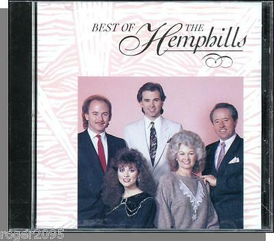

|
LaBreeska Hemphill
|
|
Born |
LaBreeska Rogers
February 4, 1940
|
|
Died |
December 9, 2015
|
|
Occupation |
Southern gospel performer |
|
Spouse(s) |
Joel Hemphill |
|
Children |
2 sons, 1 daughter |
|
Relatives |
|
LaBreeska Hemphill (February
4, 1940 - December 9, 2015) was an American Southern
gospel performer. She was a member of The
Happy Goodman Family and The Hemphills. With her
husband and children, she won eight GMA
Dove Awards and three BMI
Awards, and she was inducted into the Dollywood Gospel
Hall of Fame and the Delta
Music Museum Hall of Fame.
Early life[edit]
Hemphill was born in 1940 in Flat
Creek, Alabama.[1][2] Her
father was Walter Erskine Rogers and her mother, Gussie Mae Goodman.[1]

Hemphill start performing Southern
gospel music with her parents as part of The Happy
Goodman Family in childhood. They performed at the Ryman
Auditorium in Nashville,
Tennessee in 1949.[2]
Hemphill and her husband began
performing Southern gospel together at the Living Way Apostolic
Church in West
Monroe, Louisiana.[1] They
later pastored a Pentecostal church in Bastrop,
Louisiana.[1] They
released their first record as The Hemphills through Canaan
Records in 1966.[1] They
were active from the 1970s to the 1990s.[2] Over
the course of their career, they released over 20 records.[2] Hemphill
sang hit songs like He's Still Working On Me, I
Claim the Blood, Grandma's Rocking Chair,
and Unfinished Task.[1] The
band won eight GMA
Dove Awards and three BMI
Awards of Excellence. They were inducted into the Dollywood Gospel
Hall of Fame and the Delta
Music Museum Hall of Fame.[2]
Hemphill authored four books,[1] including
a memoir about her husband in 2012.[2]
Personal life
and death[edit]
Hemphill married Joel Hemphill in
1957. Her father-in-law, W. T. Hemphill, was the founder of the
Living Way Apostolic Church.[2] They
had two sons, Joey and Trent, and a daughter, Candy.[2] They
resided in Joelton,
a neighborhood of Nashville,
Tennessee.[3]
Hemphill died on December 9, 2015 in
Nashville, Tennessee, at 75.[1][2] Her
funeral was held in West Monroe, Louisiana.[1]
Selected works[edit]
References